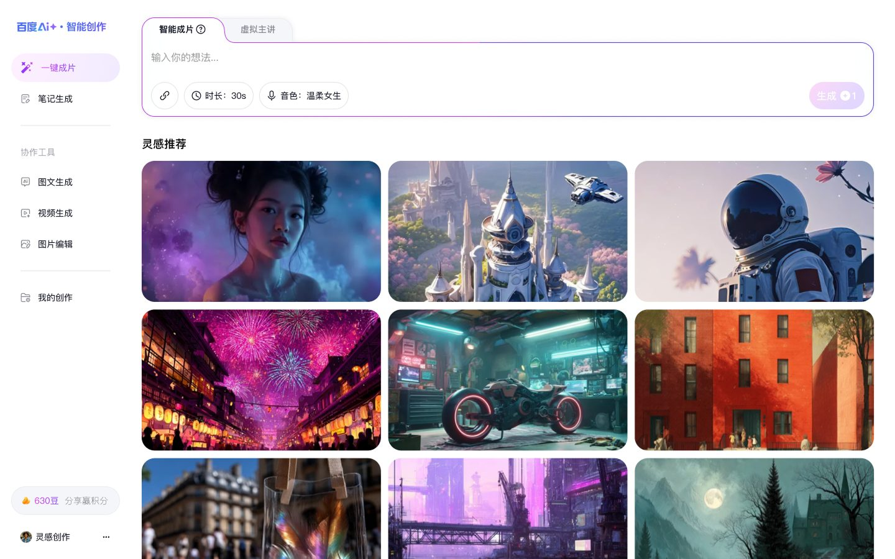

01
百度 AI 智能创作平台
A one-stop AI creation platform based on Baidu Miaobi, covering graphic content, video, digital-human narration, and smart editing from one-line input to final export.
AI Product Design / PC Web / Digital Human Flow